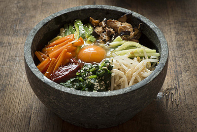

My Favorite Food
Korean Bibimbap
Bibim (비빔) translates as “mixed,” and bap (밥) means “cooked rice,” so bibimbap literally means “mixed rice.” Before eating it you’re supposed to mix everything all together.

Ingredients
- 5 cups cooked short-grain rice
- 12 ounces soy bean sprouts, washed and drained
- 8 ounces of spinach blanched and washed with the excess water squeezed out by hand
- 1 large carrot
- 1 English cucumber
- 3 to 4 green onions, chopped
- ½ pound fresh lean cut of beef (fillet mignon, flank steak)
- 4 ounces fernbrake (gosari), fresh or soaked from ½ ounce dried gosari (details below)
- 4 eggs
Directions
- Heat up a pan over medium high heat. Squeeze out excess water from the carrot. Add a few drops of cooking oil to the pan and sauté the carrot for 1 minute. Put it on the platter next to the soy bean sprouts and spinach. Clean the pan with wet paper towel or wash it.
- Heat a few drops of cooking oil in the pan and squeeze out the excess water from the cucumber. Sauté with ½ teaspoon minced garlic and a few drops of sesame oil for 30 seconds. Put it on the platter. Clean the pan.
- Heat up the pan with a few drops of cooking oil. Add the red bell pepper and sprinkle a pinch of salt over top. Sauté for 30 seconds. Put it on the platter. Clean the pan.
- Heat up the pan and squeeze out excess water from the zucchini. Add a few drops of cooking oil and sauté with 1 teaspoon minced garlic, 1 tablespoon chopped green onion, a drop of sesame oil for 1 minute until slightly softened. Put it on the platter. Clean the pan.
- Heat up the pan with a few drops of cooking oil. Add the bellflower roots and sauté for 2 to 3 minutes. Lower the heat to medium so as not to brown them. Add 1 teaspoon minced garlic and a drop of sesame oil. Stir for another minute until a little softened. Put it on the platter. Clean the pan.
For more informations cleck out this site